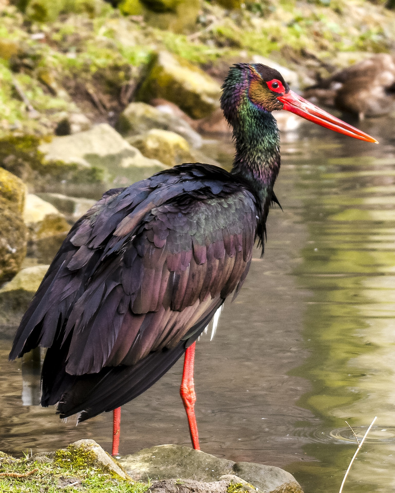

Bocian Biały
Ptak ten jest narażony na wiele zagrożeń powodowanych przez człowieka i jego działalność. Należą do nich m.in.: obniżenie poziomu wód gruntowych, melioracje odwadniające, przekształcenia użytków zielonych w pola uprawne,
Bezpośrednim zagrożeniem są także urządzenia energetyczne (tzw. rozłączniki i stacje transformatorowe na których dochodzi do śmiertelnych porażeń prądem). Na takich urządzeniach tylko na terenie województwa mazowieckiego zginęło w roku 2009 około 500 bocianów.
W niektórych krajach europejskich bardzo wcześnie dostrzeżono zagrożenia dla bocianiej populacji i w związku z tym rozpoczęto programy ochrony tego gatunku.
Bocian Czarny
Bocian czarny w Polsce podlega ochronie ścisłej, a wokół miejsc rozrodu są wyznaczone strefy ochrony. Gniazdo bociana czarnego jest chronione w promieniu 500 m. Gatunek ten wymaga czynnej ochrony.
Gatunek ten w zasadzie nie jest zagrożony wymarciem. Ma jednak status LC w Czerwonej Księdze Gatunków Zagrożonych. W Polsce jest to ptak chroniony. Szacunki liczebności tego gatunku mówią o około 2000 par lęgowych.
Orlik Grubodzioby
Orlik grubodzioby, pomimo że ma szeroki zasięg, jest gatunkiem bardzo rzadkim i uznanym za zagrożony w europejskim i azjatyckim obszarze występowania.
Jedynym miejscem stałego gniazdowania orlika grubodziobego w Polsce jest dolina Biebrzy. W latach 2006-2009 stwierdzono tutaj 15-17 par lęgowych.
Gatunek ten jest narażony na wymarcie. Ma status VU w Czerwonej Księdze Gatunków Zagrożonych. Podlega w Polsce ochronie ścisłej. Ochronie podlegają też miejsca rozrodu - 200 m od gniazda przez cały rok i 500 m w okresie od 1 marca do 31 sierpnia.
Ostrygojad Zwyczajny
To ptak morskich wybrzeży, brzegów jezior i rzek. Można go także spotkać daleko od wody na polach i łąkach. Występuje w Europie, Azji, Nowej Zelandii. W Polsce jest rzadkim ptakiem lęgowym. Podczas wędrówek występuje u nas dość licznie na wybrzeżu.
Poluje na skorupiaki, mięczaki, ryby, owady. Ze schwytaną zdobyczą ukrytą w muszli ptaki podchodzą z różnymi strategiami. Mogą uderzać muszlą o twarde podłoże (kamień), aż odpryśnie jej kawałek. Czasem też ptak czeka, aż mięczak rozchyli lekko muszlę, wówczas wkłada dziób do środka i nie pozwala się jej zamknąć.
Gatunek ten jest bliski zagrożenia wymarciem. Ma status NT w Czerwonej Księdze Gatunków Zagrożonych.
Droździk
Występuje w Europie, Azji oraz w północnej części Afryki. W Polsce występuje nielicznie, najczęściej w północno-wschodniej części kraju. Preferuje skraje lasów i innych zadrzewień. Upodobał sobie szczególnie lasy podmokłe.
To ptak częściowo wędrowny. Migracja odbywa się w nocy. U nas pojawiają się osobniki z północy Europy. Ptaki te chętnie tworzą stada z kwiczołami. Same mogą również tworzyć ogromne stada. Ptak ten występuje u nas również zimą, ale dzieje się to sporadycznie. Nocuje na drzewach i krzewach w stadach.
Poluje na wszelkie bezkręgowce, jakie znajdzie na ziemi i na liściach roślin. Zjada też owoce i nasiona roślin. Gatunek ten jest bliski zagrożenia wymarciem. Ma status NT w Czerwonej Księdze Gatunków Zagrożonych. W Polsce podlega ścisłej ochronie.
Kania Ruda
W Polsce występuje głównie na zachodzie kraju. Podczas migracji można go znaleźć w całym kraju. Spotkać go można na obrzeżach lasów liściastych, w dolinach rzek, na terenach rolniczych, w pobliżu wodnych zbiorników.
Ptak ten w poszukiwaniu zdobyczy krąży po niebie lub wypatruje jej z gałęzi. Zwykle spada na ofiarę z powietrza. Czasem łapie swoje ofiary w powietrzu lub na ziemi. To ptak wędrowny, choć zimowiska nie są mu odległe. Poluje na ssaki, ptaki, gady, płazy, ryby i owady. Zjada także padlinę, resztki mięsa, kradnie zdobycz innym ptakom, plądruje gniazda krukowatych.
Gatunek ten jest bliski zagrożenia wymarciem. Ma status NT w Czerwonej Księdze Gatunków Zagrożonych. Ptak ten znajduje się u nas pod ścisłą ochroną, a miejsca gniazdowania podlegają ochronie w promieniu 100 m i 500 m w okresie od 1 marca do 31 sierpnia.
Rycyk
Ptak ten występuje w Europie, Azji, Afryce, w Australii wraz z wyspami Indonezji. W Polsce najczęściej gatunek ten można spotkać we wschodniej części kraju. Populacja rycyka od lat systematycznie spada. Preferuje tereny podmokłe, grząskie, płycizny.
Ptak ten przebywa w niewielkich koloniach, nawet w okresie lęgów. Nie stroni też od towarzystwa innych ptaków. Poluje na grzęzawiskach, płyciznach. Podstawę diety stanowią owady (głównie chrząszcze), pierścienice i mięczaki. Zjada też nasiona roślin.
Gatunek ten jest bliski zagrożenia wymarciem. Ma status NT w Czerwonej Księdze Gatunków Zagrożonych. W Polsce ptak ten znajduje się pod ścisłą ochroną. Wymaga ochrony czynnej.